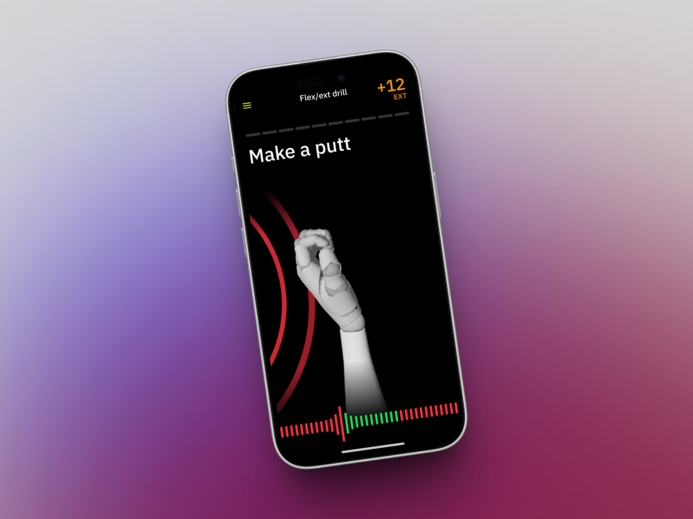
When customers buy Hackmotion device, they can start using it right away as it comes with the Core plan included. This costs 299$. However, additional features of the app are available as an upgrade either as a Plus or Pro plan, costing 499$ and 999$ respectively. Those who chose to upgrade however, were not satisfied.
One of the upgraded features is Putting. For users who do try Putting practice, one issue is that they often get “all green”(success) status, without further guidance on what to do next. This leads to unfulfilling practice and low Putting adoption. Users who have upgraded from Core plan to access putting, get low value from it and express their dissatisfaction.
Therefore, the project goal is to increase the value add of Putting to upgraded users to increase the adoption and satisfaction with the feature.
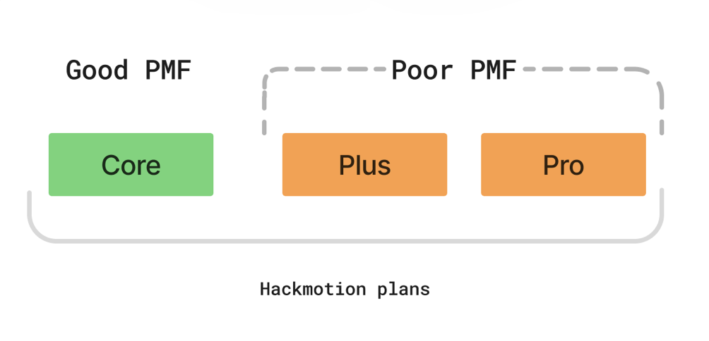
Users who upgraded to the Plus version of the app requested to downgrade and go back to the basic version as they did not get enough value out of it.
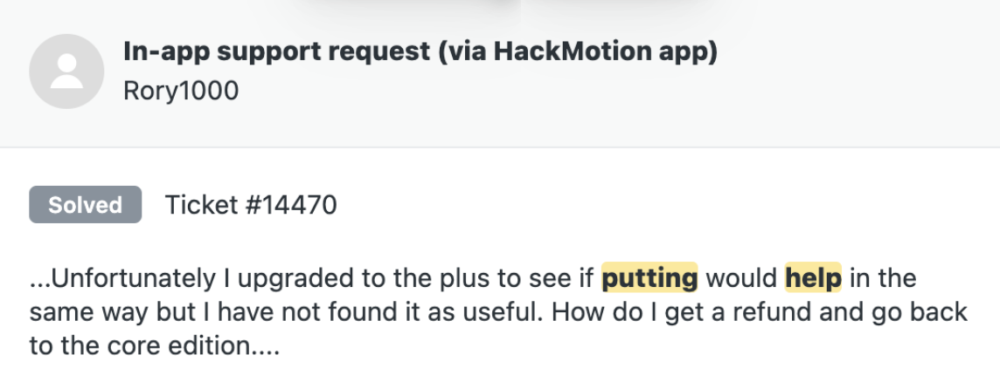
In HackMotion terms, feature adoption means making 10 shots with a club. This is the data where we saw large discrepancy between Full swing and Putting data.
From Home screen there are 2 options: to try Full swing or Putting. About 1/3 of users go to putting. These are the intended users who would need to start using the feature. From there on, about 30% complete the 10 shots.
Over time the Putting adoption has remained low - only about 3%, much lower than the 62% of Full swing.
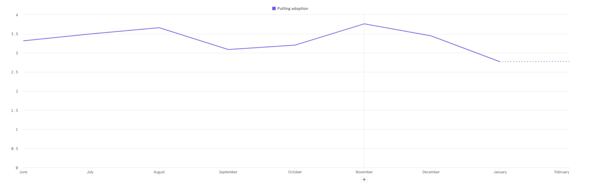
Users reach out to support with complaints about their practice being successful and not being sure what to do next.
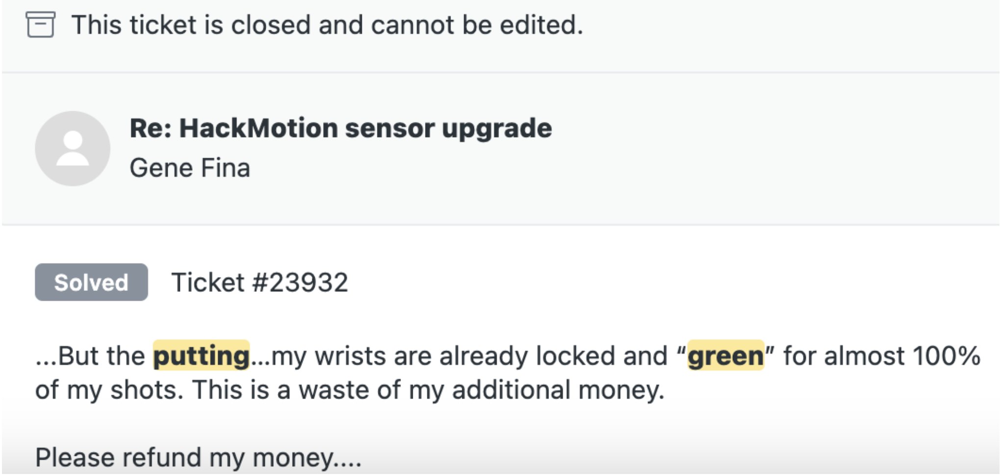
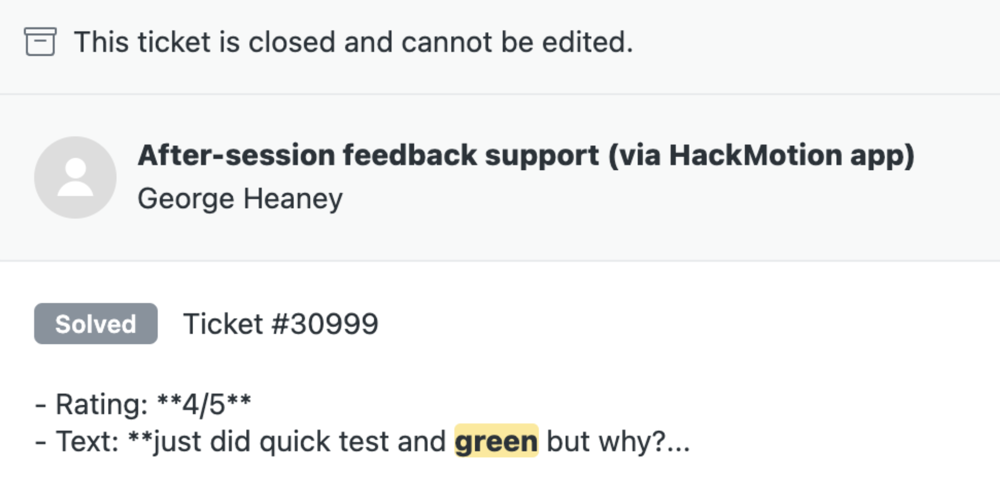
User quotes:
"Was not getting much feedback from the practice strokes. Most of the putts I made were “green""
"I use it and everything is green 95% of the time, but I know my putting isn't as good as usual"
"Putting is not exciting - green all the time. Tried before call"
Users have asked for putting related features such as tempo, which means that they are able to swing the club consistently in upwards and downwards motion. They are using some rather simple existing solution on the market to help them with this, such as metronome, or golf tempo apps.
User quotes:
"You could provide more information about wrist movement during the shot: trajectory, speed, acceleration, and timing"
"Would like to see some putting drills"
"My main feedback is this: I would use the app more for putting if it included some essential functionality that I feel is currently missing. Features like rotation and tempo aren’t yet included in the module."
We believe that users would benefit from additional putting drills and exercises that have:
This should lead to more engaged users, better Putting adoption and increased satisfaction too.
Therefore, our goals would be to:
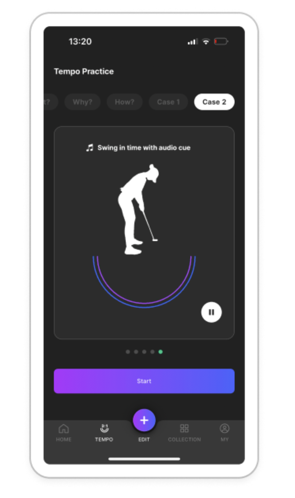
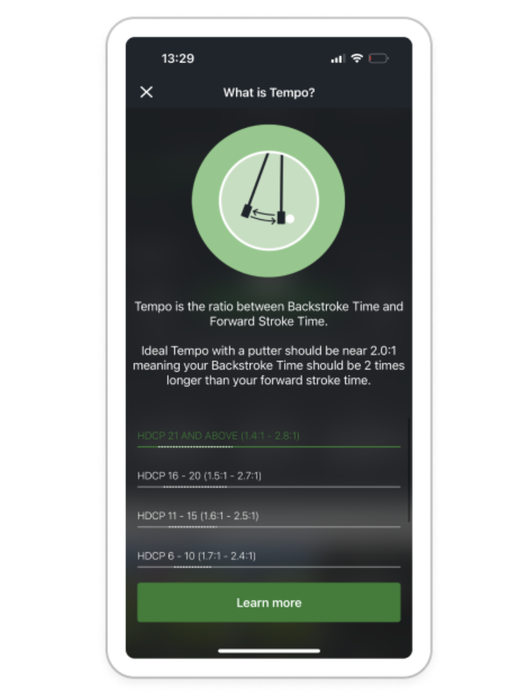
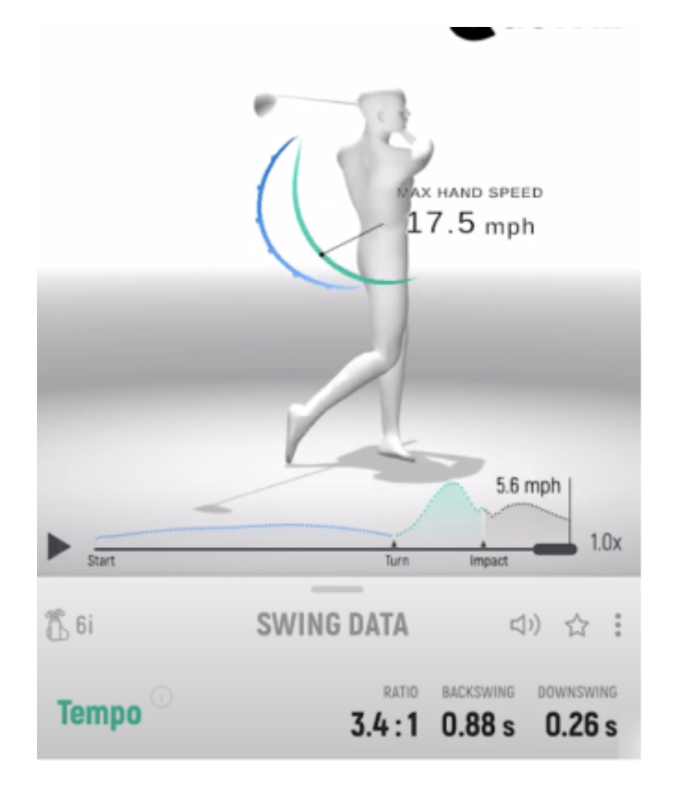
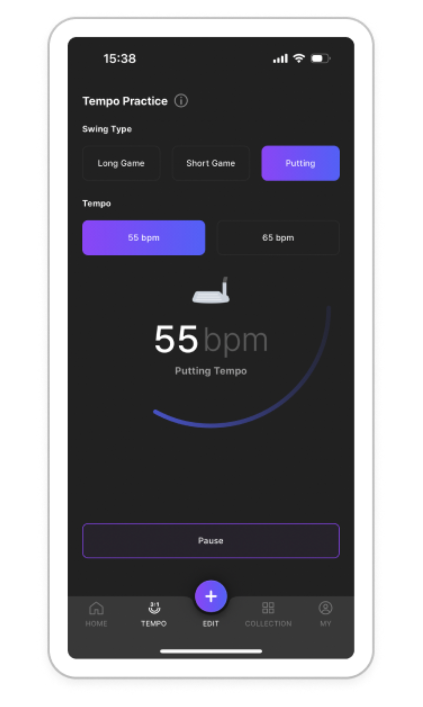
I ran an ideation workshop to get the ideas from the team and come up with clusters of opportunities. We came up with several, which I organized in a solution opportunity tree.
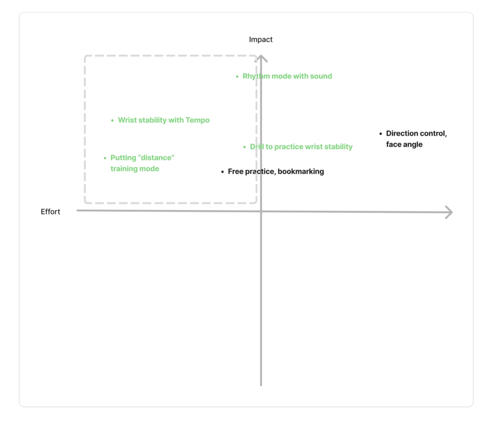
Then the solutions were mapped on the impact-effort axis to understand the most effective ones to start with (in green).
Wrist Stability with distances: We would provide users with a "distance" challenge where they can choose how far the putt should go, then we could measure the putt performance according to the distance selected.
Rhythm mode with sound: We might offer audio tempo guides that will help users to swing in consistent rhythm, or simply a metronome.
Wrist stability with tempo metric: We could also add a Ratio metric, which is a proxy for your tempo. This would allow users to play and see the data feedback in real-time.
Because of the reliance on the physical device - the way we measure the data and show it to the users, there was additional step needed in the design process. It essentially required to create initial design in low to medium fidelity, review it with engineers, and then proceed with technical prototyping. Then the test is run with golf equipment to see whether it can work in practice. Once that stage is validated, design can be further developed in higher fidelity.
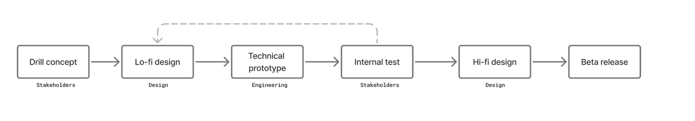
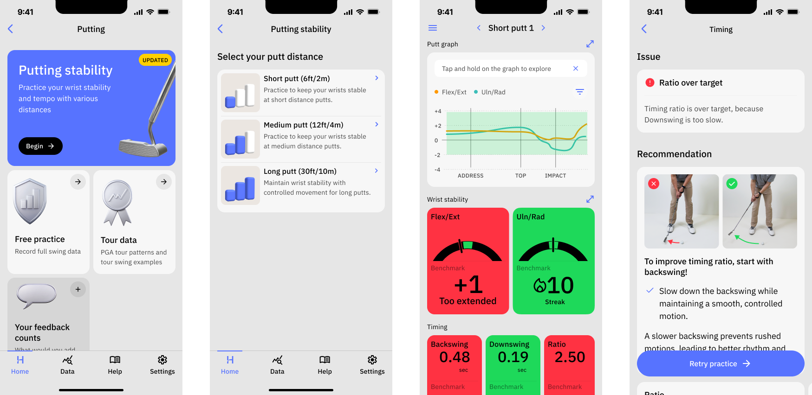
This allows golf players to select a short, medium, or long putt distance, on which we would then base the performance feedback.
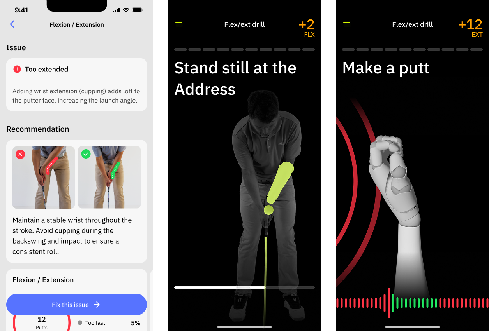
The first drill focuses on players wrist stability, allowing them to make repeaded putts with targeted feedback.
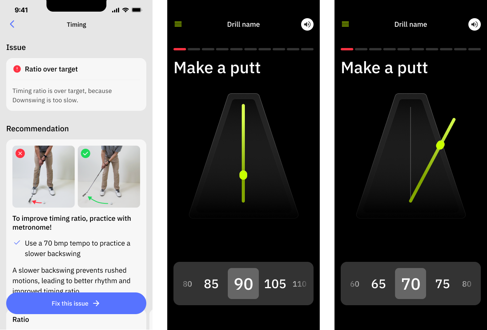
Timing drill allows players to make putts with more consistent strokes. This training mode involes the use of metronome that is tuned to match the speed of the recommended putt.
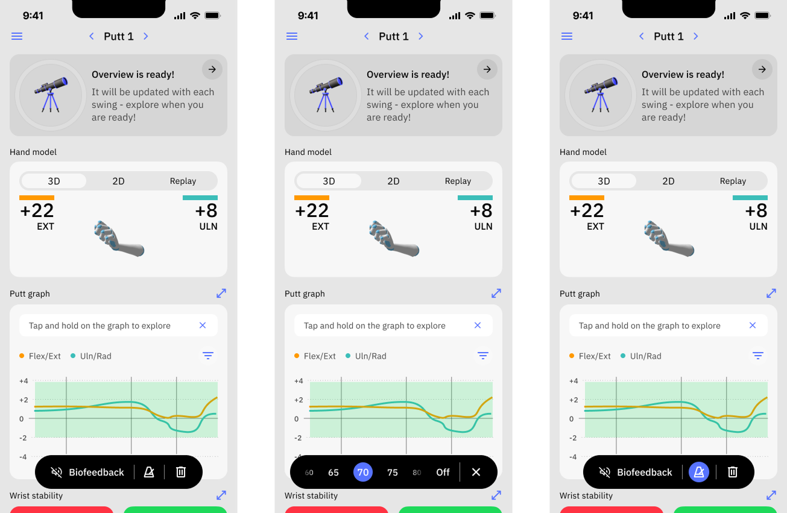
Finally, metronome is available during a regular session, so that players can listen to the optimal BMP, while keeping an overview of all the performance metrics.
The solutions were validated in 3 parts. The first phase took place on-site (see design image below), where I tested the concept with stakehodlers.
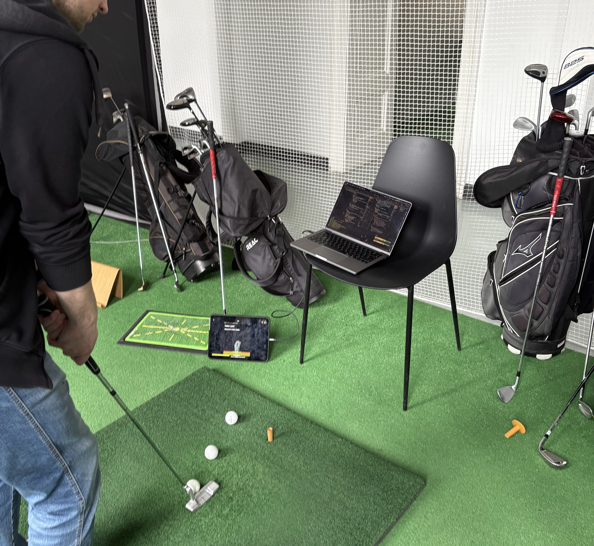
This allowed me to catch early feedback regarding the feel of the solution - I quickly found out that the prototype needs to be tested in real-life scenario to understand how well it can work to help a player progress and learn.
The next part was done through user interviews. We had a weekly calendar slot allocated to user calls - they are able to book a call with us directly, and many do so to ask a question about Hackmotion. This was a good opportunity to quickly show a prototype and get their feedback in a continuous manner.
And lastly, we released the updates incrementally to ensure the core metrics stay healthy. If we didnt see any negative trends, we kept increasing the feature rollout.
We followed an incremental rollout approach, where the each feature was released separately to measure the impact on the adoption.
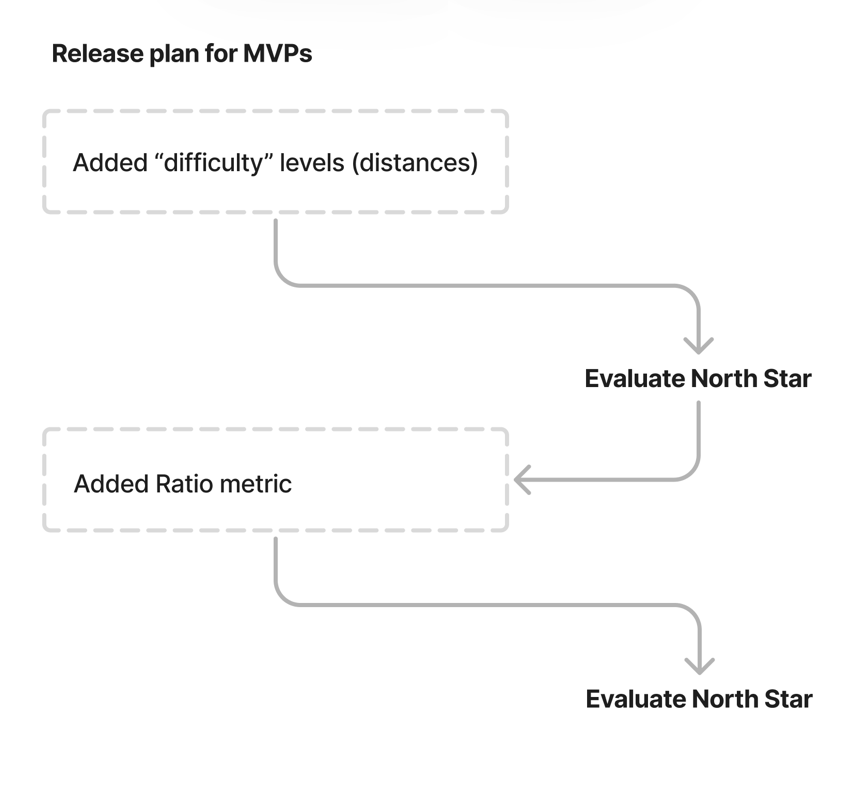
In the first release we introduced the putting distances. While it was perceived positively, we learned that the users who complained about it being too easy, are in fact vocal minority. Through more comprehensive data in mixpanel we saw that that users were challenged enough during the practice - less than 50% of them were able to complete the session without hiccups for one metric. When multiple performance metrics are taken into account, this percentage goes down to 20% or less. So then we decided to add tips and drills for users to practice wrist stability.
We also learned that users don't use the long putt distance we provided, and distance selection step causes some drop-off. Also, early user feedbacl indicated that they dont have that specific distance available at home where they practice. We decided to remove the intial distance selection step, reverting to the default as used before, and planned to place it in a separate training mode, capturing users with more intent.
In the next release we added a training drill to practice where players could work on their wrist stability and timing. This was somehting that users were missing, so we received positive feedback in our social groups. The most challenging part of this was the prototyping, as you couldn't really understand how well the drill will work based on the design alone. It had to be build quickly by an engineer, and tested on-site. During the testing I had to work on sound design, as we discovered that there was no such sound available that could indicate the incorrect position of the wrist. Another on-the-go amendment was a range gauge, which had to be more visible and match the motion of the wrist.
To recap - we wanted to increase the agerage putting session count per user by 2x, and increase the feature satisfaction to 4.8.
The average session count increased steadily since we started to work on it. While we didn't achieve the desired 2x in the quarter, we still had considerable improvement, despite going into the spring season when the average usage tends to fall.
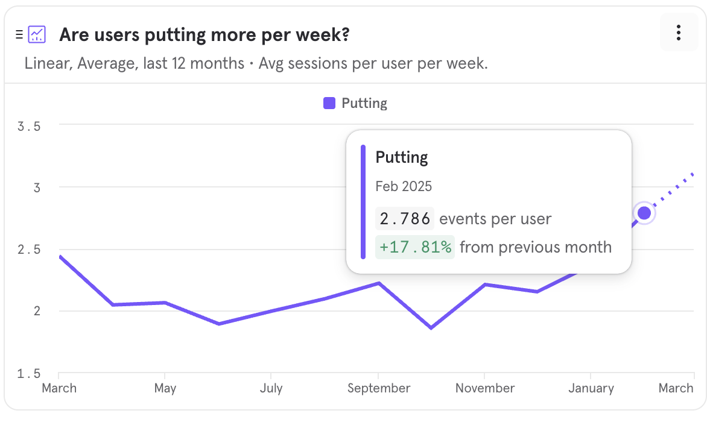
To measure the satisfaction with putting, we launched a survey at the end of the practice. We hoped to achieve 4.8 to be on par with the full swing practice, and landed on 4.25.
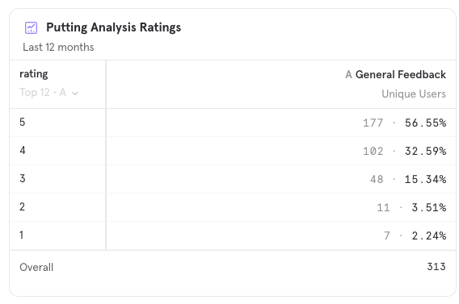
Overall, these are the main takeaways: